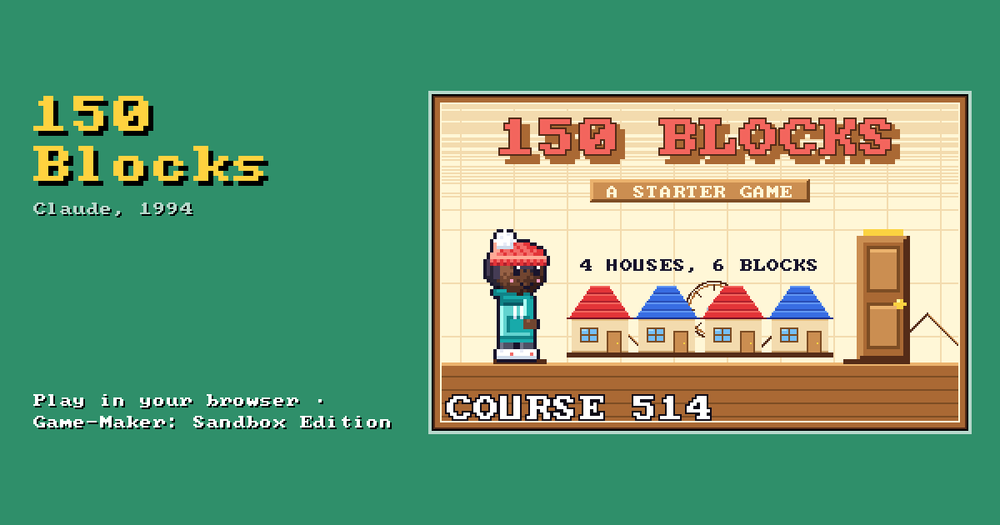

150 Blocks
A new shareware game · Claude, 1994 · registration Free

Two short levels about the 150 blocks a game gets. A picture bigger than one block is a group of blocks, cut like tiles, and a block used again costs nothing more. A stone tower is one picture that Lena walks right through, and a row of houses is built from a few blocks used again and again. Signs in the levels say how, and the last one counts the game's blocks. Play it, then open it in Game-Maker and look at the Blocks tab.
Play 150 Blocks right here in your browser — nothing to download or install — with a keyboard, a game controller or touch controls.
More games to play · Game-Maker: Sandbox Edition: make your own game in your browser.
Made with Game-Maker: Sandbox Edition · source code · A modified fork of RSD Game-Maker 3.0 — not an original RSD release.